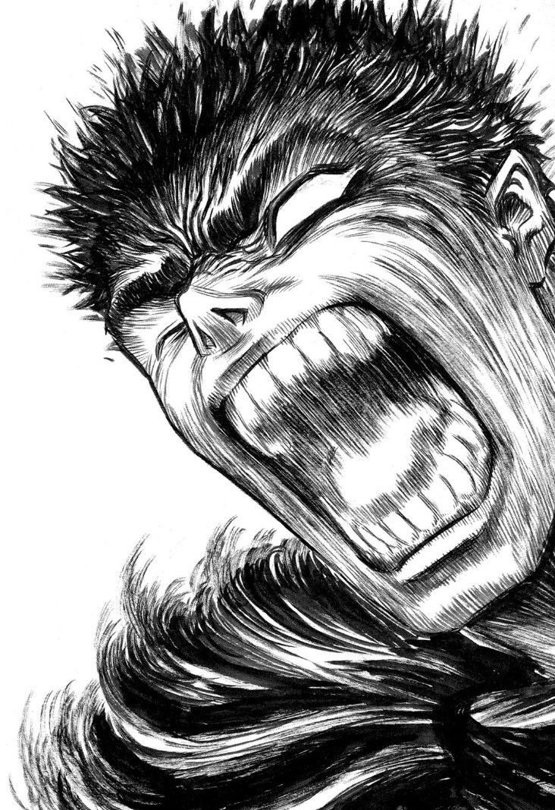
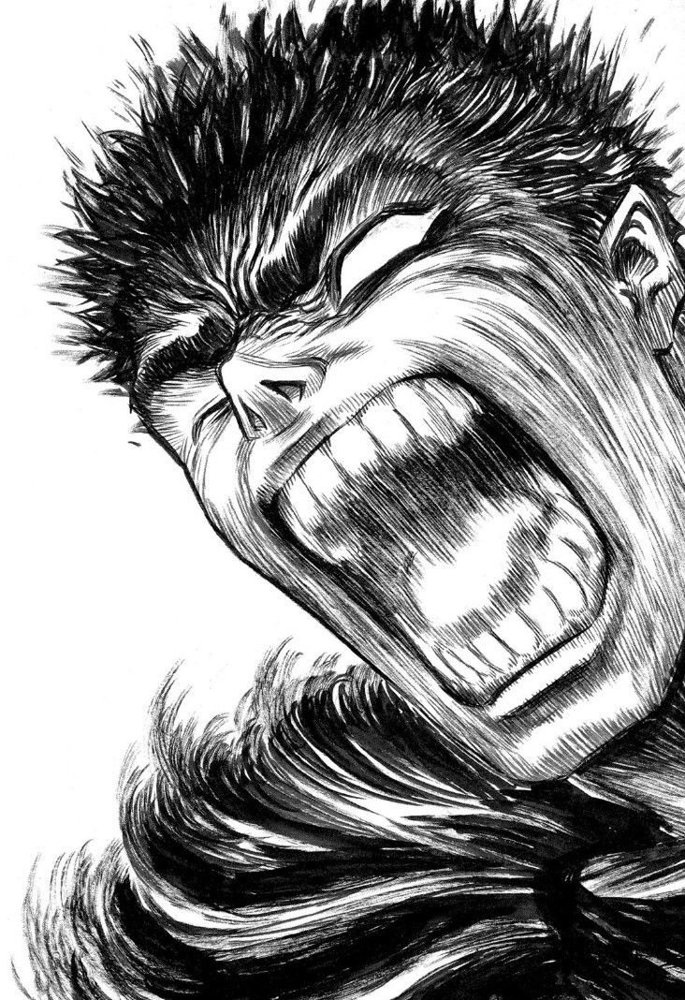

Гатс — высокий, мускулистый брюнет с резкими чертами лица. При этом даже на вид он очень гибок и подвижен. Тело покрыто сетью шрамов, полученных во множестве сражений. Одевается в одежду тёмных цветов. Также, как правило, носит панцирь и полузакрытый шлем. В заспинных ножнах носит двуручный меч.
После Затмения, в ходе которого погиб весь Отряд Сокола, внешность Гатса значительно преобразилась. На месте потерянного правого глаза — пустая глазница, потерянная левая рука заменена железным протезом. Сам же Гатс имеет внешность странствующего наёмника увешанного оружием. Он носит чёрный панцирный доспех и чёрный плащ с капюшоном, полностью скрывающий фигуру. На спине Гатс носит свой огромный меч — «Убийца Драконов». На шее, сзади справа (в «Prototype» — справа на груди), у него «Клеймо Жертвы» — знак полученный во время Затмения, привлекающий призраков и нежить к носителю.
В арке «Сокол Тысячелетней Империи» Гатс получает Доспех Берсерка — латный доспех чёрного цвета с шлемом в виде черепа. Когда Гатс впадает в состояние берсерка, шлем приобретает форму оскаленной волчьей морды. Из-за использования этого доспеха у Гатса появились седые пряди в волосах и шрамы по всему телу. Также Гатс выглядит старше своих лет.